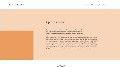
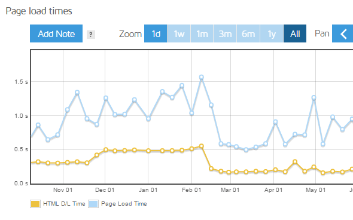

Dernier rapport sur les performances pour :
https://ninacarducci.github.io/
Catégorie GTmetrix
Performance
69%Structure
81%Éléments essentiels du Web
La plus grande peinture de contenuLCP
887 msTemps de blocage totalTBT
264 msChangement de disposition cumulatifCLS
0,42Visualisation de la vitesse
0,1 s
0,2 s
0,3 s
0,4 s
0,5 s
0,6 s
0,7 s
0,8 s
0,9 s
1s
Connexion : 23 ms
Backend : 2 ms
Problèmes majeurs
Ces audits sont identifiés comme les principaux problèmes ayant un impact sur vos performances .


Concentrez-vous d’abord sur ces audits
Ces audits ont probablement le plus grand impact sur les performances de votre page.
Les audits de structure n'affectent pas directement votre score de performance, mais l'amélioration des audits présentés ici peut servir de point de départ pour des gains de performances globaux.
Voir tous les audits de structuresDétails de la page
Le contenu de votre page est divisé comme suit :
1,0s
Temps de charge complète
Taille totale de la page - 29,7 Mo
Nombre total de demandes de pages - 28
Plus de GTmetrix
Conseils et suggestions supplémentaires basés sur l’analyse de votre page.
Besoin d'aide pour l'optimisation ?
Trouvez un développeur avec notre partenaire Fiverr pour optimiser vos performances
Les demandes de tiers affectent vos performances
Découvrez pourquoi et les solutions potentielles
Trucs et astuces pour utiliser GTmetrix
Raccourcis, guides et pointeurs pour tirer le meilleur parti de GTmetrix
Comprendre et évaluer les graphiques en cascade
Apprenez à identifier et à signaler les problèmes potentiels lors du chargement de votre page
Accéder aux options d'analyse avec un compte GTmetrix
Bloquez les publicités, capturez des vidéos, modifiez les vitesses de connexion, etc.
Lisez notre blog pour plus d’astuces et de conseils en matière de performances.
Performance Metrics
The following metrics are generated using Lighthouse Performance data.
First Contentful Paint
How quickly content like text or images are painted onto your page.
A good user experience is 0.9s or less. Learn more.
Time to Interactive
How long it takes for your page to become fully interactive.
A good user experience is 2.5s or less. Learn more.
Speed Index
How quickly the contents of your page are visibly populated.
A good user experience is 1.3s or less. Learn more.
Total Blocking Time
How much time is blocked by scripts during your page loading process.
A good user experience is 150ms or less. Learn more.
Largest Contentful Paint
How long it takes for the largest element of content (e.g. a hero image) to be painted on your page.
A good user experience is 1.2s or less. Learn more.
Cumulative Layout Shift
How much your page's layout shifts as it loads.
A good user experience is a score of 0.1 or less. Learn more.
Browser Timings
These timings are milestones reported by the browser.
Redirect Duration
Connection Duration
Backend Duration
Time to First Byte (TTFB)
DOM Interactive Time
DOM Content Loaded Time
First Paint
Onload Time
Fully Loaded Time
| Impact | Audit | |||||||||||||||||||||||||||||||||||||||||||||||||||||||||||||||||
|---|---|---|---|---|---|---|---|---|---|---|---|---|---|---|---|---|---|---|---|---|---|---|---|---|---|---|---|---|---|---|---|---|---|---|---|---|---|---|---|---|---|---|---|---|---|---|---|---|---|---|---|---|---|---|---|---|---|---|---|---|---|---|---|---|---|---|
| High | Avoid enormous network payloads LCP | Total size was 29.7MB | ||||||||||||||||||||||||||||||||||||||||||||||||||||||||||||||||
|
Large network payloads cost users real money and are highly correlated with long load times. Learn how to improve this
|
||||||||||||||||||||||||||||||||||||||||||||||||||||||||||||||||||
| Med | Serve static assets with an efficient cache policy | Potential savings of 27.1MB | ||||||||||||||||||||||||||||||||||||||||||||||||||||||||||||||||
|
A long cache lifetime can speed up repeat visits to your page. Learn how to improve this
|
||||||||||||||||||||||||||||||||||||||||||||||||||||||||||||||||||
| Med | Avoid large layout shifts CLS | 5 elements found | ||||||||||||||||||||||||||||||||||||||||||||||||||||||||||||||||
|
These DOM elements contribute most to the CLS of the page. Learn how to improve this
|
||||||||||||||||||||||||||||||||||||||||||||||||||||||||||||||||||
| Med-Low | Properly size images | Potential savings of 22.1MB | ||||||||||||||||||||||||||||||||||||||||||||||||||||||||||||||||
|
Serve images that are appropriately-sized to save cellular data and improve load time. Learn how to improve this
|
||||||||||||||||||||||||||||||||||||||||||||||||||||||||||||||||||
| Low | Efficiently encode images | Potential savings of 1.91MB | ||||||||||||||||||||||||||||||||||||||||||||||||||||||||||||||||
|
Optimized images load faster and consume less cellular data. Learn how to improve this
|
||||||||||||||||||||||||||||||||||||||||||||||||||||||||||||||||||
| Low | Serve images in next-gen formats | Potential savings of 8.83MB | ||||||||||||||||||||||||||||||||||||||||||||||||||||||||||||||||
|
Image formats like WebP and AVIF often provide better compression than PNG or JPEG, which means faster downloads and less data consumption. Learn how to improve this
|
||||||||||||||||||||||||||||||||||||||||||||||||||||||||||||||||||
| Low | Eliminate render-blocking resources FCP LCP | Potential savings of 11ms | ||||||||||||||||||||||||||||||||||||||||||||||||||||||||||||||||
|
Resources are blocking the first paint of your page. Consider delivering critical JS/CSS inline and deferring all non-critical JS/styles. Learn how to improve thisResources that may be contributing to render-blocking include:
|
||||||||||||||||||||||||||||||||||||||||||||||||||||||||||||||||||
| Low | Avoid long main-thread tasks TBT | 3 long tasks found | ||||||||||||||||||||||||||||||||||||||||||||||||||||||||||||||||
|
Lists the longest tasks on the main thread, useful for identifying worst contributors to input delay. Learn how to improve this
|
||||||||||||||||||||||||||||||||||||||||||||||||||||||||||||||||||
| Low | Reduce JavaScript execution time TBT | 26ms spent executing JavaScript | ||||||||||||||||||||||||||||||||||||||||||||||||||||||||||||||||
|
Consider reducing the time spent parsing, compiling, and executing JS. You may find delivering smaller JS payloads helps with this. Learn how to improve this
|
||||||||||||||||||||||||||||||||||||||||||||||||||||||||||||||||||
| Low | Reduce unused CSS FCP LCP | Potential savings of 25.5KB | ||||||||||||||||||||||||||||||||||||||||||||||||||||||||||||||||
|
Reduce unused rules from stylesheets and defer CSS not used for above-the-fold content to decrease bytes consumed by network activity. Learn how to improve this
|
||||||||||||||||||||||||||||||||||||||||||||||||||||||||||||||||||
| Low | Defer offscreen images | Potential savings of 8.57MB | ||||||||||||||||||||||||||||||||||||||||||||||||||||||||||||||||
|
Consider lazy-loading offscreen and hidden images after all critical resources have finished loading to lower time to interactive. Learn how to improve this
|
||||||||||||||||||||||||||||||||||||||||||||||||||||||||||||||||||
| Low | Minify CSS FCP LCP | Potential savings of 5.18KB | ||||||||||||||||||||||||||||||||||||||||||||||||||||||||||||||||
|
Minifying CSS files can reduce network payload sizes. Learn how to improve this
|
||||||||||||||||||||||||||||||||||||||||||||||||||||||||||||||||||
| Low | Minify JavaScript FCP LCP | Potential savings of 16.3KB | ||||||||||||||||||||||||||||||||||||||||||||||||||||||||||||||||
|
Minifying JavaScript files can reduce payload sizes and script parse time. Learn how to improve this
|
||||||||||||||||||||||||||||||||||||||||||||||||||||||||||||||||||
| Low | Avoid chaining critical requests FCP LCP | 10 chains found | ||||||||||||||||||||||||||||||||||||||||||||||||||||||||||||||||
|
The Critical Request Chains below show you what resources are loaded with a high priority. Consider reducing the length of chains, reducing the download size of resources, or deferring the download of unnecessary resources to improve page load. Learn how to improve thisMaximum critical path latency: 422ms Initial Navigation
|
||||||||||||||||||||||||||||||||||||||||||||||||||||||||||||||||||
| Low | Reduce unused JavaScript LCP | Potential savings of 28.9KB | ||||||||||||||||||||||||||||||||||||||||||||||||||||||||||||||||
|
Reduce unused JavaScript and defer loading scripts until they are required to decrease bytes consumed by network activity. Learn how to improve this
|
||||||||||||||||||||||||||||||||||||||||||||||||||||||||||||||||||
| N/A | Avoid an excessive DOM size TBT | 131 elements | ||||||||||||||||||||||||||||||||||||||||||||||||||||||||||||||||
|
A large DOM will increase memory usage, cause longer style calculations, and produce costly layout reflows. Learn how to improve this
|
||||||||||||||||||||||||||||||||||||||||||||||||||||||||||||||||||
| N/A | Largest Contentful Paint element LCP | 1 element found | ||||||||||||||||||||||||||||||||||||||||||||||||||||||||||||||||
|
This is the largest contentful element painted within the viewport.
|
||||||||||||||||||||||||||||||||||||||||||||||||||||||||||||||||||
| N/A | Reduce initial server response time FCP LCP | Root document took 2ms | ||||||||||||||||||||||||||||||||||||||||||||||||||||||||||||||||
|
Keep the server response time for the main document short because all other requests depend on it. Learn how to improve this
|
||||||||||||||||||||||||||||||||||||||||||||||||||||||||||||||||||
| N/A | Minimize main-thread work TBT | Main-thread busy for 715ms | ||||||||||||||||||||||||||||||||||||||||||||||||||||||||||||||||
|
Consider reducing the time spent parsing, compiling and executing JS. You may find delivering smaller JS payloads helps with this. Learn how to improve this
|
||||||||||||||||||||||||||||||||||||||||||||||||||||||||||||||||||
| N/A | Reduce the impact of third-party code TBT | Third-party code blocked the main thread for 261ms | ||||||||||||||||||||||||||||||||||||||||||||||||||||||||||||||||
|
Third-party code can significantly impact load performance. Limit the number of redundant third-party providers and try to load third-party code after your page has primarily finished loading. Learn how to improve this
|
||||||||||||||||||||||||||||||||||||||||||||||||||||||||||||||||||
| N/A | User Timing marks and measures | |||||||||||||||||||||||||||||||||||||||||||||||||||||||||||||||||
|
No user timings and/or marks found. Learn more |
||||||||||||||||||||||||||||||||||||||||||||||||||||||||||||||||||
| Show No Impact Audits | ||||||||||||||||||||||||||||||||||||||||||||||||||||||||||||||||||
| None | Avoid CSS @import FCP LCP | |||||||||||||||||||||||||||||||||||||||||||||||||||||||||||||||||
|
Nothing to do here, good job! Learn how to improve this |
||||||||||||||||||||||||||||||||||||||||||||||||||||||||||||||||||
| None | Enable text compression FCP LCP | |||||||||||||||||||||||||||||||||||||||||||||||||||||||||||||||||
|
Nothing to do here, good job! Learn how to improve this |
||||||||||||||||||||||||||||||||||||||||||||||||||||||||||||||||||
| None | Use a Content Delivery Network (CDN) | |||||||||||||||||||||||||||||||||||||||||||||||||||||||||||||||||
|
Nothing to do here, good job! Learn how to improve this |
||||||||||||||||||||||||||||||||||||||||||||||||||||||||||||||||||
| None | Use a <meta name="viewport"> tag with width or initial-scale TBT | |||||||||||||||||||||||||||||||||||||||||||||||||||||||||||||||||
|
Nothing to do here, good job! Learn how to improve this |
||||||||||||||||||||||||||||||||||||||||||||||||||||||||||||||||||
| None | Use video formats for animated content LCP | |||||||||||||||||||||||||||||||||||||||||||||||||||||||||||||||||
|
Nothing to do here, good job! Learn how to improve this |
||||||||||||||||||||||||||||||||||||||||||||||||||||||||||||||||||
| None | Use passive listeners to improve scrolling performance | |||||||||||||||||||||||||||||||||||||||||||||||||||||||||||||||||
|
Nothing to do here, good job! Learn how to improve this |
||||||||||||||||||||||||||||||||||||||||||||||||||||||||||||||||||
| None | Don't lazy load Largest Contentful Paint image | |||||||||||||||||||||||||||||||||||||||||||||||||||||||||||||||||
|
Nothing to do here, good job! Learn how to improve this |
||||||||||||||||||||||||||||||||||||||||||||||||||||||||||||||||||
| None | Avoid multiple page redirects FCP LCP | |||||||||||||||||||||||||||||||||||||||||||||||||||||||||||||||||
|
Nothing to do here, good job! Learn how to improve this |
||||||||||||||||||||||||||||||||||||||||||||||||||||||||||||||||||
| None | Ensure text remains visible during webfont load FCP LCP | |||||||||||||||||||||||||||||||||||||||||||||||||||||||||||||||||
|
Nothing to do here, good job! Learn how to improve this |
||||||||||||||||||||||||||||||||||||||||||||||||||||||||||||||||||
| None | Preconnect to required origins FCP LCP | |||||||||||||||||||||||||||||||||||||||||||||||||||||||||||||||||
|
Nothing to do here, good job! Learn how to improve this |
||||||||||||||||||||||||||||||||||||||||||||||||||||||||||||||||||
| None | Avoid document.write() | |||||||||||||||||||||||||||||||||||||||||||||||||||||||||||||||||
|
Nothing to do here, good job! Learn how to improve this |
||||||||||||||||||||||||||||||||||||||||||||||||||||||||||||||||||
| None | Preload Largest Contentful Paint image LCP | |||||||||||||||||||||||||||||||||||||||||||||||||||||||||||||||||
|
Nothing to do here, good job! Learn how to improve this |
||||||||||||||||||||||||||||||||||||||||||||||||||||||||||||||||||
| None | Avoid serving legacy JavaScript to modern browsers TBT | |||||||||||||||||||||||||||||||||||||||||||||||||||||||||||||||||
|
Nothing to do here, good job! Learn how to improve this |
||||||||||||||||||||||||||||||||||||||||||||||||||||||||||||||||||
| None | Avoid non-composited animations CLS | |||||||||||||||||||||||||||||||||||||||||||||||||||||||||||||||||
|
Nothing to do here, good job! Learn how to improve this |
||||||||||||||||||||||||||||||||||||||||||||||||||||||||||||||||||
| None | Enable Keep-Alive FCP LCP | |||||||||||||||||||||||||||||||||||||||||||||||||||||||||||||||||
|
Nothing to do here, good job! Learn how to improve this |
||||||||||||||||||||||||||||||||||||||||||||||||||||||||||||||||||
| None | Avoid unload event listeners | |||||||||||||||||||||||||||||||||||||||||||||||||||||||||||||||||
|
Nothing to do here, good job! Learn how to improve this |
||||||||||||||||||||||||||||||||||||||||||||||||||||||||||||||||||
| None | Remove duplicate modules in JavaScript bundles TBT | |||||||||||||||||||||||||||||||||||||||||||||||||||||||||||||||||
|
Nothing to do here, good job! Learn how to improve this |
||||||||||||||||||||||||||||||||||||||||||||||||||||||||||||||||||
| None | Combine images using CSS sprites FCP LCP | |||||||||||||||||||||||||||||||||||||||||||||||||||||||||||||||||
|
Nothing to do here, good job! Learn how to improve this |
||||||||||||||||||||||||||||||||||||||||||||||||||||||||||||||||||
| None | Preload key requests FCP LCP | |||||||||||||||||||||||||||||||||||||||||||||||||||||||||||||||||
|
Nothing to do here, good job! Learn how to improve this |
||||||||||||||||||||||||||||||||||||||||||||||||||||||||||||||||||
| None | Lazy load third-party resources with facades TBT | |||||||||||||||||||||||||||||||||||||||||||||||||||||||||||||||||
|
Nothing to do here, good job! Learn how to improve this |
||||||||||||||||||||||||||||||||||||||||||||||||||||||||||||||||||
| None | Use HTTP/2 for all resources | |||||||||||||||||||||||||||||||||||||||||||||||||||||||||||||||||
|
Nothing to do here, good job! Learn how to improve this |
||||||||||||||||||||||||||||||||||||||||||||||||||||||||||||||||||
What do these audits mean?
These audits are best practices established by Google to help build websites for optimal front-end performance.
Each audit is assessed based on your adherence to them and ordered by the most likely impact to your page's performance.
Note that Structure audits do not directly affect your Performance score, however addressing them can serve as good starting point to improve page load times overall. Additionally, some of the audits are correlated and thus, fixing one audit may affect others.
Learn about all the auditsNeed optimization help?
We've written various guides and articles to help you improve your page performance:
Need Assistance?
We can recommend partners to further assist you with optimizing your site. Contact us and we'll point you in the right direction.
Need expert help?
Find a developer with our partner Fiverr to optimize your performanceWaterfall Chart
A request-by-request visualization of the page load. Learn how to read a waterfall chart.
Registered users have access to Resource Usage Graphs!
See how your page utilizes system resources and add more insight to your Waterfall Chart.
Page Load Video
See your page load with videos
Logged in users can record a video of this page loading and pinpoint exactly where bottlenecks and stoppages occur.
Slow playback up to 4x to visualize loading behaviour
Jump to major milestones like First Paint and Onload
Download and embed videos
Report History
A series of graphs to keep track of your page performance over time. Learn how to use the History Graphs.
Page metrics
- 1d
- 1w
- 1m
- 3m
- 6m
- 1y
- All
Page sizes and request counts
- 1d
- 1w
- 1m
- 3m
- 6m
- 1y
- All
Page scores
- 1d
- 1w
- 1m
- 3m
- 6m
- 1y
- All
This history graph has more reports available
Get more data points in your history when you log in.
Log in to get more historical data, add notes, and download your history data
Login Sign up for free!History Date Range
We're only displaying the first 3 reports, but more are available.
 A higher resolution (at least 840px wide) is required to display the Report History graphs
Tip: rotating your device into landscape mode may give you the necessary resolution to view the graphs.